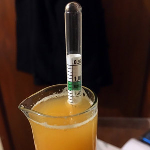

Acts-as-Pale Ale (v1.0)
Live Temperature
Updated every 30 minutes, with luck. The goal is to stay within 18-23ºC.

Thu, 26 May 2016
- Gravity 1.014 (~3% ABV)
- Temperature steady at 20ºC for several days
Mon, 23 May 2016
- Fermenter reached a high of 26.3ºC, due to both heat pad and blanket
- Switched off heat pad and removed blanket, slowly cooled to 18.8ºC
- Heat pad switched on, rose to approx. 20ºC
Sun, 22 May 2016
- 2 x 1.5kg cans of Maltexo
- 28g Nelson Sauvin added after hot break
- Another 28g Nelson Sauvin added at 30-minute mark
- Another 14g Nelson Sauvin added at 55-minute mark
- Boil ended at 60-minute mark and quickly cooled to 24ºC in ice water
- Topped up with water and pitched M44 US West Coast Yeast at 24ºC
- Rehydrated the yeast about 20 minutes too early – kept it around 32ºC in water
- Original gravity 1.041
Mangrove Jack's Columbus APA
Final result
- Tasted awful
- Poor instructions for boil?
- Variable temperature?
- Too long in fermenter?
Sat, 7 Nov 2015
- Bottled beer
Tue, 6 Oct 2015
- Weather has turned sunny
- Airlock barely bubbling
Sun, 27 Sep 2015
- Another cold night, compensated by setting the room heater on a timer
- Sample quite pleasant, bodes well
- Added hop pellets (Columbus, Centennial)
Fri, 25 Sep 2015
- Cold night, morning reading: 19º
- External temperature sensor not sticking to the fermenter barrel very well
- Adjusted live reading reporting rate (thanks, Kirsty!)
- Gravity still over 1.040
Thu, 24 Sep 2015
- Morning reading: 21º
- Evening reading: 21º
- Set up live temperature readings
Wed, 23 Sep 2015
- Initial gravity: beyond the limits of my hydrometer, over 1.040
- Used hot water (tap water, measured at 60°), not boiling water
- Pitched yeast about 24.5°
- Weather cold, set fermenter on heating pad